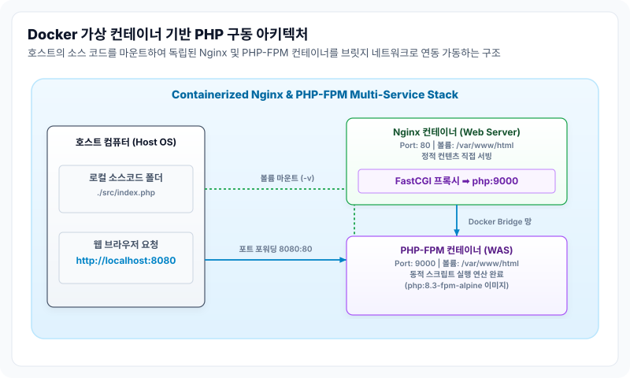

Docker Compose 기반 웹 서버(Nginx + PHP-FPM) 구축
로컬 개발 또는 실제 상용 서비스 배포 시 단일 프로세스가 아닌 웹서버(Nginx), 웹 애플리케이션 서버(PHP-FPM WAS), 그리고 데이터베이스(MySQL)와 같은 복수개의 컨테이너들을 유기적으로 결합하여 가동해야 합니다.
이때 다중 컨테이너 환경의 실행 설정과 네트워크 구성을 하나의 설정 파일로 통합 조율(Orchestration)할 수 있도록 제공되는 도구가 바로 Docker Compose(도커 컴포즈)입니다.
1. Docker 멀티 컨테이너 웹 서비스 아키텍처
아래 다이어그램은 호스트 컴퓨터의 물리 소스 폴더를 도커 볼륨(Volume)으로 가상 마운트하고, 외부 포트 요청을 격리된 Nginx 컨테이너로 받아 브릿지 네트워크를 통해 PHP-FPM 컨테이너로 데이터를 토스하는 연동 흐름을 나타냅니다.

2. 멀티 서비스 정의 파일 구성 (docker-compose.yml)
프로젝트 루트 폴더에 아래의 docker-compose.yml 파일을 배치하여 컨테이너들을 한 번에 실행할 수 있도록 명세합니다.
version: '3.8'
services:
# 1) 웹 서버 서비스 (Nginx 컨테이너)
web:
image: nginx:alpine
ports:
- "127.0.0.1:8080:80" # 보안 설정: 외부망 개방 없이 로컬(127.0.0.1) 호스트에서만 접속 허용
volumes:
- ./src:/var/www/html # 소스코드 실시간 연동 (Bind Mount)
- ./nginx.conf:/etc/nginx/conf.d/default.conf:ro # 설정 파일 변조 방지용 읽기 전용(ro) 마운트
depends_on:
- php # PHP 컨테이너가 먼저 시작된 후 기동되도록 순서 강제
# 2) PHP WAS 서비스 (PHP-FPM 컨테이너)
php:
image: php:8.3-fpm-alpine
volumes:
- ./src:/var/www/html # Nginx와 동일한 소스 폴더 공유
depends_on:
- db
# 3) 데이터베이스 서비스 (MySQL 컨테이너)
db:
image: mysql:8.0
restart: always
environment:
MYSQL_ROOT_PASSWORD: ${DB_ROOT_PASSWORD} # 환경변수(.env) 파일을 통해 보안 값 전달
MYSQL_DATABASE: myapp_db
ports:
- "127.0.0.1:3306:3306" # 로컬 디버깅 툴 접속용 개방 (실운영 서버에서는 주석 처리 권장)
volumes:
- dbdata:/var/lib/mysql # 컨테이너 소멸 시에도 데이터 유실을 막기 위한 볼륨 마운트
# 영구 보존용 도커 관리형 볼륨 정의
volumes:
dbdata:
3. Nginx 설정 구성 (nginx.conf)
도커 브릿지 네트워크 환경에서 Nginx와 PHP-FPM 컨테이너가 연동되도록 프로젝트 루트 경로에 nginx.conf 파일을 구성합니다. FastCGI 패스 주소로 IP 대신 도커 컴포즈 서비스명을 명시하는 것이 중요합니다.
server {
listen 80;
root /var/www/html;
index index.php index.html;
location / {
try_files $uri $uri/ /index.php?$query_string;
}
# PHP 확장자 요청을 처리하기 위한 FastCGI 록업 설정
location ~ \.php$ {
include fastcgi_params;
# 중요: 도커 브릿지 네트워크 내의 'php' 서비스 도메인 9000번 포트로 FastCGI 전송
fastcgi_pass php:9000;
fastcgi_param SCRIPT_FILENAME $document_root$fastcgi_script_name;
}
}
💡 내장 가상 DNS 해석 원리
fastcgi_pass php:9000지시어에서php는 컴포즈 파일에 정의된 서비스 이름입니다. 도커 엔진은 동일한 프로젝트 네트워크망 내에 존재하는 컨테이너들의 내부 IP가 유동적으로 바뀔 때마다, 서비스 명칭을 IP 주소로 실시간 분석 및 변환해 주는 내장 DNS 서버를 자동으로 가동합니다.따라서 고정 IP를 수동으로 기입하거나 변경할 필요 없이 서비스 별칭만으로 프록시 매핑을 안전하게 수행할 수 있습니다.
4. 도커 스택 명령어 제어 요령
설정 파일들이 준비되면 터미널 상에서 컴포즈 명령어를 수행하여 스택을 켜고 끌 수 있습니다.
# 1. 환경변수(.env) 파일을 주입하며 백그라운드 모드로 전체 컨테이너 세트 시작
docker compose up -d
# 2. 실행 중인 전체 서비스 컨테이너 구동 상태 모니터링
docker compose ps
# 3. 전체 가동 중지 및 컨테이너 리소스 파괴 (소스 코드와 볼륨 데이터는 안전하게 디스크에 잔존)
docker compose down
컨테이너가 소멸 및 갱신되더라도 실제 소스코드 변경과 데이터베이스 레코드가 보존되도록 하기 위해 제공되는 파일 매핑 원리는 다음 가이드에서 학습합니다.
- 다음 학습: 도커 볼륨 마운트와 실시간 개발 및 데이터 보존